Home
Welcome to my site. This site shows off my projects and how to use them. Feel free to make use of any of them and contribute any additions or modifications back. For any questions about the projects or how they work use the contacts in the about tab (though I may be slow to respond).
Projects
These projects have been primarily built by me and are currently being maintained. The projects are hosted on my GitHub and are available for download either there or on their GitHub pages. All projects are free for anyone to use and modify, the only thing I ask is that propper attribution is provided to my projects and any third party components used.
Southern Arm Control
This platform is intended to be used in education. The project currently controls a simulation of the SCORBOT-ER III robot. The system is built on the Robot Operating System (ROS) platform. Information on ROS can be found here. The system can be found on GitHub with the root found here. The system runs on Ubuntu 16.04. The system will run on a VM, but it is not ideal for the simulation of the robot. All citations and references for this section can be found on the paper in the downloads page.
Structure
The system uses ten custom packages for to run seven of which are in current usage.
- sac_controllers - Holds all of the controllers for the SAC system.
- sac_description - Contains the robot model for use in gazebo.
- sac_drivers - Holds the drivers for the system to interface with extternal robots.
- sac_gazebo - Holds the world to display the robot and other models in Gazebo.
- sac_launch - Holds the global launch files to start the system.
- sac_translators - Holds the nodes for translating inputs to joint angle goals.
- sac_msgs - Contains the definitions for the custom message types used in the SAC system.
- sac_config - Contains the definitions for the custom message types used in the SAC system.
- scorbot_config - Holds the package generated by the MoveIt! Setup Assistant for the scorbot and MoveIt!
- andreas_arm_config - Holds the package generated by the MoveIt! Setup Assistant for the scorbot and MoveIt!
SAC Node Structure
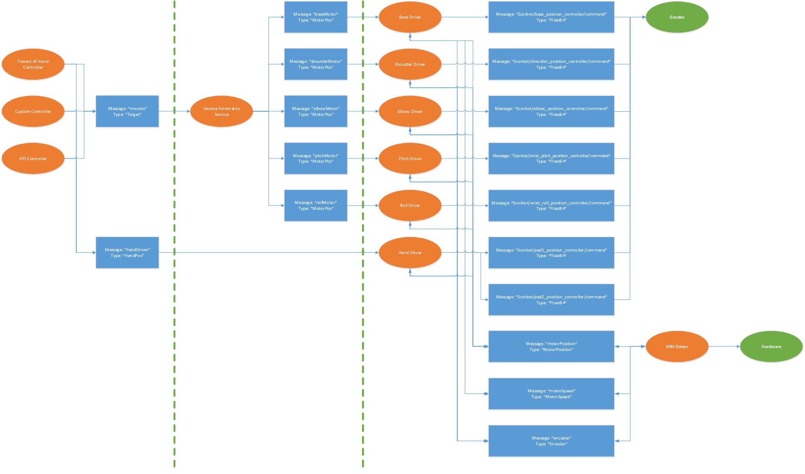
The topology of the implemented ROS system is
detailed in the above figure. The orange nodes represent the individual
ROS nodes that make up the system, green nodes indicate external items,
and blue indicate the ROS messages passed with the given message topic
and type. The first section to the left is the controllers, in the
middle are the translators, and on the right are the drivers.
SAC Controller Nodes
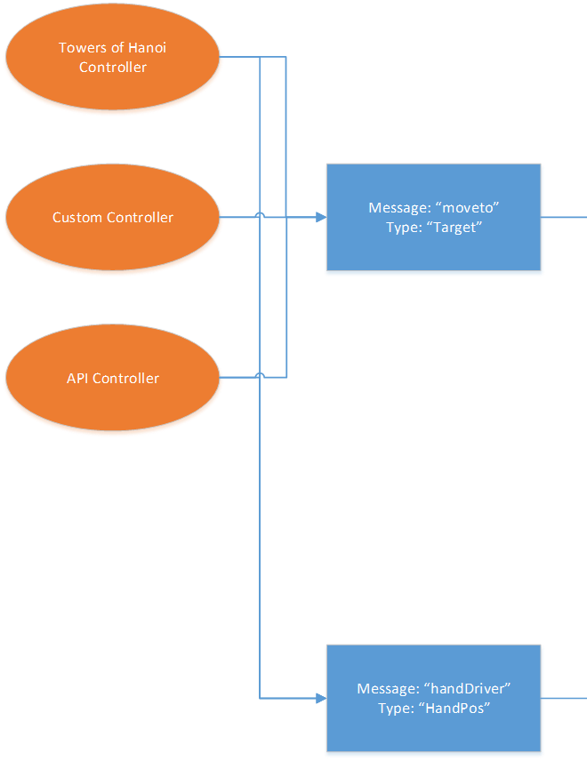
Controllers are used to send overall goals for
the arm.
SAC Translator Nodes
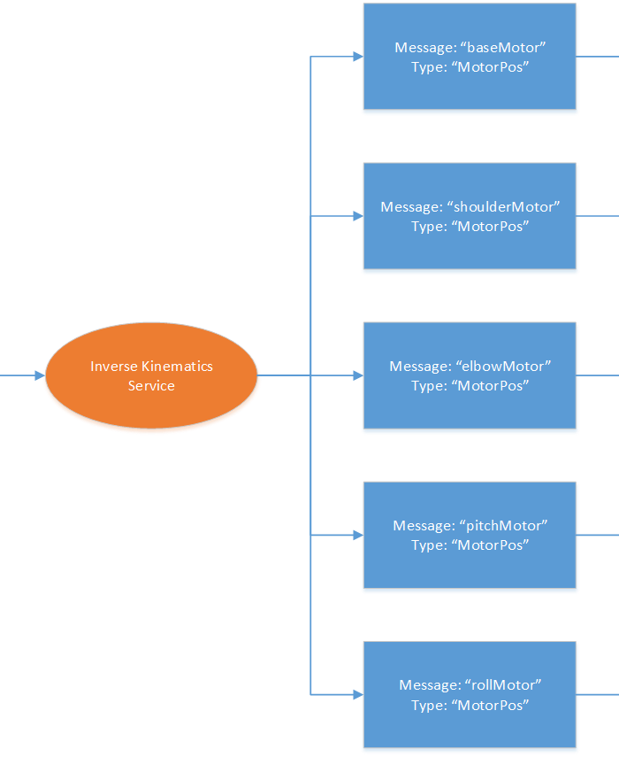
Translators are used to translate the inputs
from the controllers to the joints.
SAC Driver Nodes
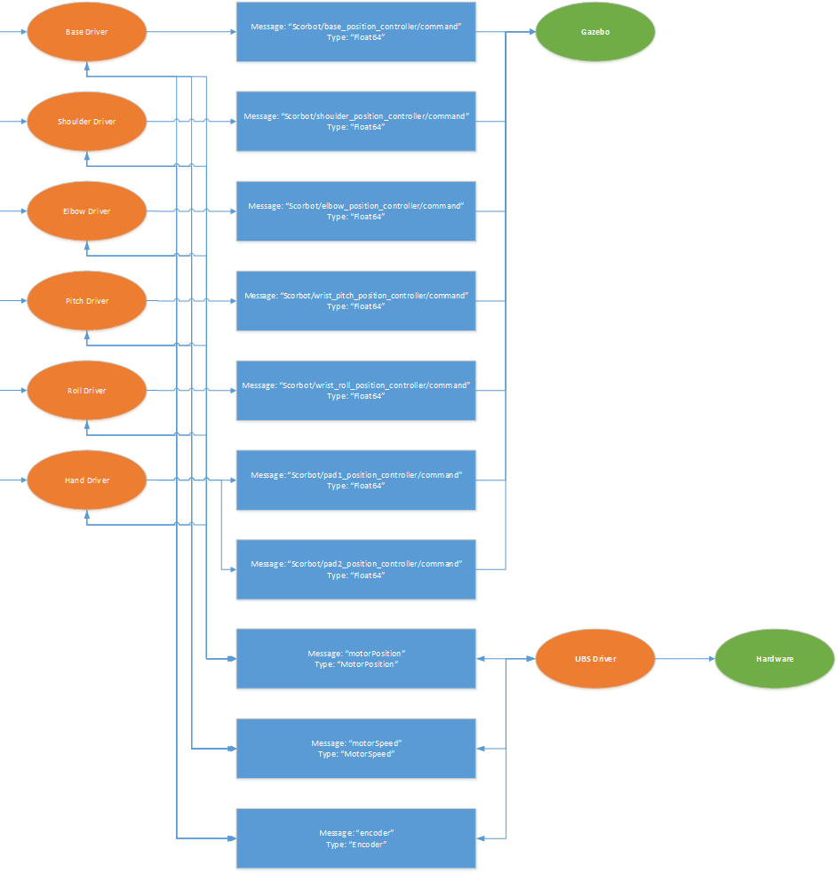
Drivers are used to do low level hardware
interfacing.
Inverse Kinematics
Scorbot-ER III Side View
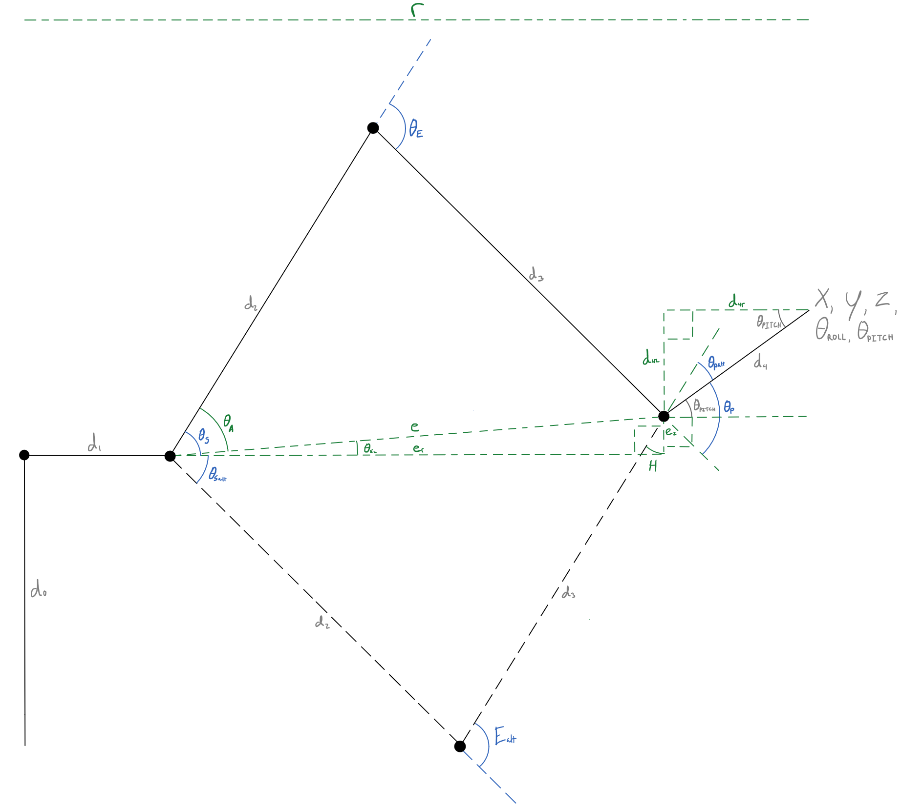
A side view of the arm with the inverse
kinematics variables. Black solid lines indicate the links of the robot
in the primary position. Black dashed lines indicate the alternate
positions of the robot links. Large black dots indicate the joints of
the robot. Blue angles, dashed lines, and labels indicate the joint
angles of the robot. Green dashed lines, angles and labels indicate the
intermediate variables used in the calculation of the joint angles. Gray
labels indicate the known values of the end-effector that are passed in
and for the lengths of the arm links.
Scorbot-ER III Top View
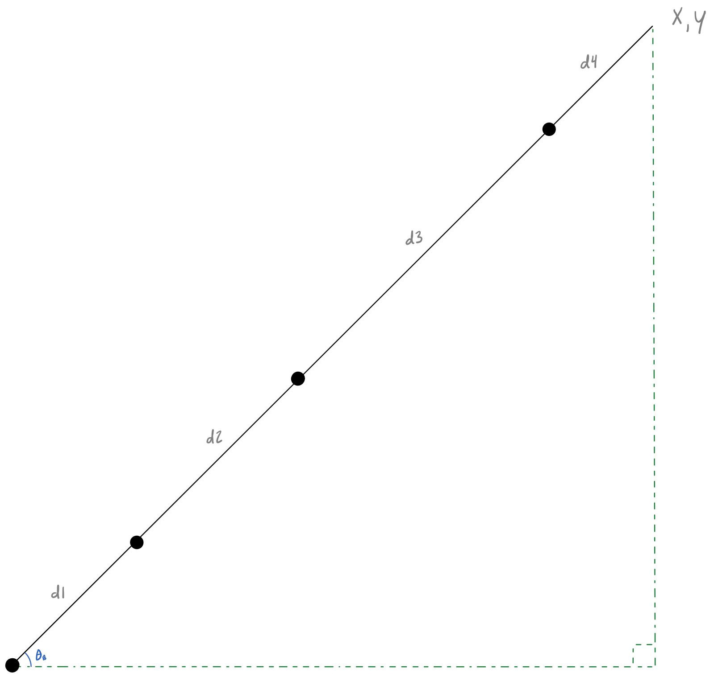
A top view of the arm with the inverse
kinematics variables. Black solid lines indicate the links of the robot
in the primary position. Black dashed lines indicate the alternate
positions of the robot links. Large black dots indicate the joints of
the robot. Blue angles, dashed lines, and labels indicate the joint
angles of the robot. Green dashed lines, angles and labels indicate the
intermediate variables used in the calculation of the joint angles.
Gray labels indicate the known values of the end-effector that are
passed in and for the lengths of the arm links.
First we need to find the base angle (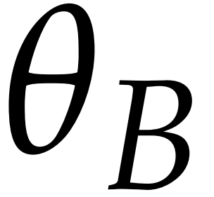). This can be done using the inverse tangent as
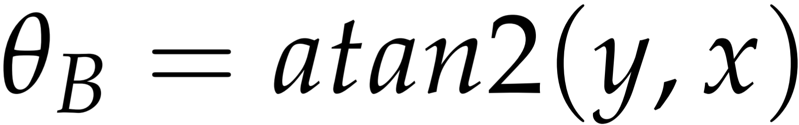
Where
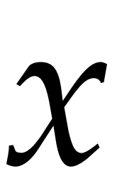 and
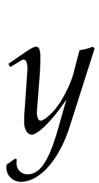 are the given end-
effector goals for their respective axis.
The projected height (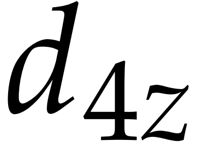) and radius (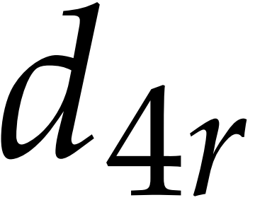) of the 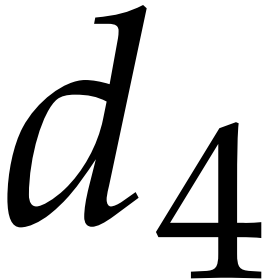 link can be found using the input angle 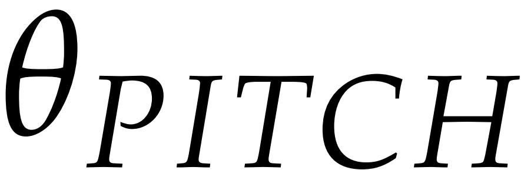 by the equations
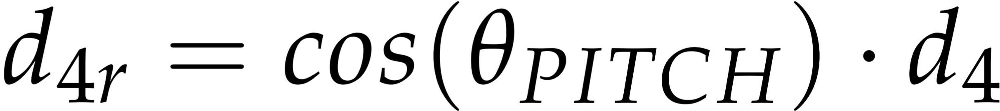
and
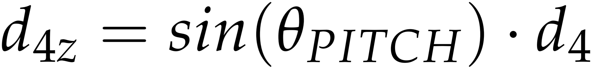
The total radius
(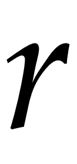) from the center of the
robot to the end-effector can be found by using the Pythagorean Theorem as
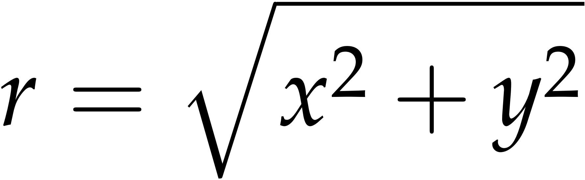
The next variable which needs to be found is the
difference in height from the shoulder joint
(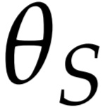) to the wrist
pitch joint (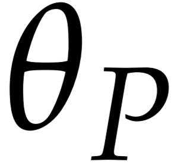) can
be found by
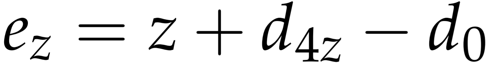
The radius between these points can also be found using
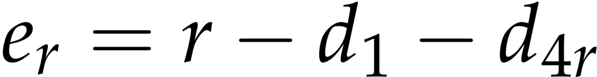
Again using Pythagorean Theorem the total distance
() between these joints can
be found, written as
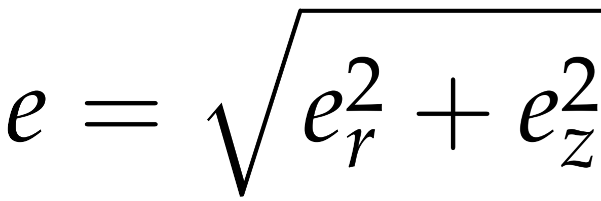
The elbow joint
(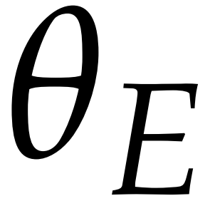) can be found
using the equation
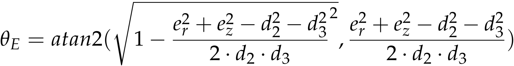
Since all the distances are known for the elbow triangle
and the wrist pitch elevation triangle, The
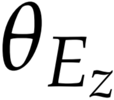 and the
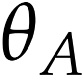 angles can be found
using the Law of Cosines as
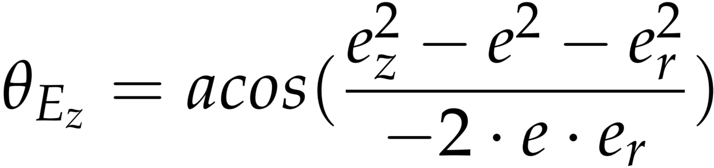
and
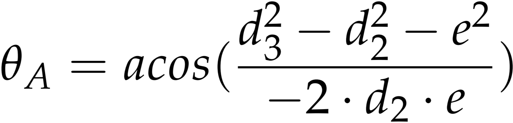
The shoulder joint
() can be found by
using the angles found in the previous two equations with
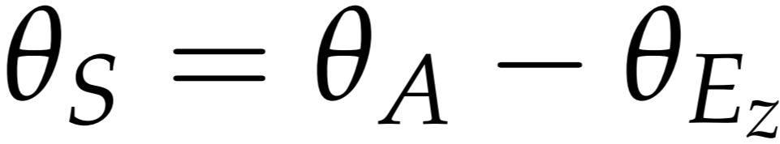
The wrist pitch joint
() can be found
using the surrounding known joints. This equation can be written as
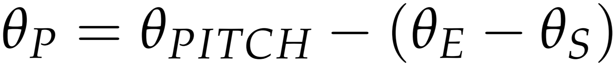
The wrist roll joint
(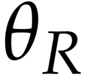) joint is given by
the input as
Installation
There are several ways to install the SAC system. The first is to install the latest version. This is the version currently in active development on GitHub. This version should be stable for the most part but may have new features which are incomplete. The second way to install is to choose and install a specific version from the archive. The third option is to upgrade or downgrade to a specific version. This will uninstall the components of the latest version and install the necessary new components. The instructions for these can be found in the menu on the left, on the page of the version to be installed.
Latest
The latest version of the system can be installed in the steps below:
- Download and install Ubuntu 16.04 (Newer versions comming soon) on either a computer or virtual machine.
- Setup Ubuntu, installing any programs you will need.
-
Install git by running
sudo apt-get install git -
Clone the setup project onto your system by running
git clone https://github.com/greenpro/sac_setup.git -
Change the directory to the new project folder
cd sac_setup -
Run the setup script.
./setup.sh -
The sac_setup program can now be removed from the system if needed.
cd ..
rm -rf sac_setup -
To run the project run
If this does not work run
cd ~/sac/
roslaunch sac_launch towers.launchcd ~/sac/
. devel/setup.bash
./build.sh
roslaunch sac_launch towers.launch
Latest Version Upgrade
To upgrade to the latest version:
-
Clone the setup project onto your system by running
If the project is already cloned run
git clone https://github.com/greenpro/sac_setup.gitto get the latest version and skip the next step.cd sac_setup
./setupPull.sh -
Change the directory to the new project folder
cd sac_setup -
Run the setup script.
./latestUpgrade.sh -
The sac_setup program can now be removed from the system if needed.
cd ..
rm -rf sac_setup
Lunar
For this version follow the latest version instruction as it is currently in active current use.
Kinetic
The Kinetic Version of the system can be installed in the steps below:
- Download and install Ubuntu 16.04 on either a computer or virtual machine.
- Setup Ubuntu, installing any programs you will need.
-
Install git by running
sudo apt-get install git -
Clone the setup project onto your system by running
git clone https://github.com/greenpro/sac_setup.git -
Change the directory to the new project folder
cd sac_setup -
Run the setup script.
./kineticSetup.sh -
The sac_setup program can now be removed from the system if needed.
cd ..
rm -rf sac_setup -
To run the project run
If this does not work run
cd ~/sac/
roslaunch sac_launch towers.launchcd ~/sac/
. devel/setup.bash
./build.sh
roslaunch sac_launch towers.launch
Kinetic Version Downgrade
To downgrade to the Kinetic Version:
-
Clone the setup project onto your system by running
If the project is already cloned run
git clone https://github.com/greenpro/sac_setup.gitto get the latest version and skip the next step.cd sac_setup
./setupPull.sh -
Change the directory to the new project folder
cd sac_setup -
Run the setup script.
and follow the options to downgrade.
./kineticUpgrade.sh -
The sac_setup program can now be removed from the system if needed.
cd ..
rm -rf sac_setup
Building
To build the project a script has been made, this can be called by running:
cd ~/sac/
./build.sh
Running
To run the project run
roslaunch sac_launch [controller].launch
[controller] is the first word of the
controller to be run. The current launch files are:
-
api.launch -
custom.launch -
towers.launch
Design Guidlines
- The packages in the SAC workspace should be decoupled as much as possible (they should not depend on another package to build), with exception to the sac_launch, which depends on everything, and the sac_msgs, which everything depends on, these packages were created to make the others more independant of eachother. The other package dependancy is from the gazebo package to the description package and this should be removed later by combinding these two packages.
- In keeping with the ROS methodology each node should do one task and nothing else, if another task is needed another node should be used for it.
- The README.md files in each folder should contain all the information for that folder needed by a developer.
- This workspace is ment to be used in overall robotics control education. In keeping with this the installation and use of the workspace should require as little knowlege of ROS and the nuts and bolts of the framework and system as possible to allow for a maximum amount of time spent working on algorithms and concepts.
- This workspace should include only currently develped ROS components. This will allow the package to keep current with new releases of ROS on current versions of Ubuntu and Raspian.
- Any code or examples of code used should be noted in the README.md in the description for the file the code was used in.
- All README.md files should follow the same format as shown in the README_mainTemplate.md and README_subFolderTemplate.md. Each section of the template should be included only if it is applicable to the package or folder. This is to make the package more uniform and to simplify documentation.
- General launch senarios should be launched from the sac_launch package. The launch files in this package should only have includes for launch files in other packages. The other packages' launch files should only include launch files from the immediate package.
Contributing
The project can be contributed to by making a pull request (PR) on the packages github. Any contributions to the project should follow the design guidlines layed out in the design section.
Known Issues
There are a few known issues with the project currently,
most of which stem from the fact that the project has not been implemented on
real hardware yet.
Feedback from Services
The service drivers are not giving feedback from the robot and leaves default values. This feature has worked in tests on other systemsStepper Motor Equations
Since the system has not been used with the real robot the angle to step conversion for each motor has not been verified yet, and is likely not correct.Simulation Object Physics
The Gazebo simulor does not currently work with scene objects very well. Sometimes the objects do not fall completely, and sometimes they fall to far into the other objects rather than resting on top. This is most likely a Gazebo issue as it is random and will sometimes correct itself after an object is picked up or moved. The glytch causes an issue with the gripper as sometimes it cannot reach the object to be picked up, and sometimes it will pick up the object below the target object. The unreliable grip issue may possibly be solved by using the MoveIt! package, though this will not solve the sinking/dropping issue.Simulator Crashing
The Gazebo simulator currently crashes about 90% - 95% of time when running on a VM. I think this is an issue with Gazebo, not anything with my project and this may be resolved with new versions of Gazebo.Downloads
Paper
A Robotics Framework for Simulation and Control of a Robotic Arm for Use in Higher Education
Note: I will be posting a new version of this paper on this site once SAC Lunar is fully complete. Untill then the documentation will be on this site and on the project GitHubs. (yes, I know there are a few minor errors in the paper they will be fixed in the next version).
Setup
| Package | Version | zip | tar.gz |
|---|---|---|---|
| sac_setup | Kinetic | Download | Download |
Packages
| Package | Version | zip | tar.gz |
|---|---|---|---|
| andreas_arm_config | Kinetic | Download | Download |
| sac_config | Kinetic | Download | Download |
| sac_controllers | Kinetic | Download | Download |
| sac_description | Kinetic | Download | Download |
| sac_drivers | Kinetic | Download | Download |
| sac_gazebo | Kinetic | Download | Download |
| sac_launch | Kinetic | Download | Download |
| sac_msgs | Kinetic | Download | Download |
| sac_translators | Kinetic | Download | Download |
| scorbot_config | Kinetic | Download | Download |
CraigCode1010
This project is the awsome website you see before you
now. This site has been created completely from scratch using simple
javascript, css3, HTML5, and some fonts from Google. This allows the site to be
developed using any editor (I am using vim), and The site can be served from
any type of server, including a Python server. Though this project is claimed
under a GNU v3.0 Licence, I do ask that anyone who makes a copy of it changes
the banners, content, and name on the site.
HTMLsmash
This project is an offshoot of my CraigCode1010.com project, which can be found at project site. This project is used to compile the site to a static HTML site. The project allows for multiple teplates and HTML parts to be compiled into a single static HTML page which can be easily served up from a small embedded server or quickly from a larger server with minimal load on the system. This project has been designed and tested on linux through Bash on Ubuntu on Windows, though it should work on any OS as it is written in python. The project currently uses python 3.6 which comes pre-installed on most linux distros.
Terms
These terms will apply to this and all files in the project including documentation and code.-
HTML Part (part/snippet)
- Individual HTML snippets to be compiled to final main
- Files end in a .pt file extension (this may be changed, though using it provides syntax highlighting)
-
Tag
- A searchable identifier within the main.pt or another *.pt file to be replaced by HTML smash
- formatted as {{ID}} (in the AngularJS syntax) where ID is the tag
-
HTML Template (template)
- used to create repeated pieces of HTML like buttons, text boxes and headings
-
Target Project (smash)
- The HTML project to be compiled and the final output file
Install & Run
Install
- Install Git
- Clone/Fork/Download the project from The GitHub Project.
- Done.
Run
To run the project, go the into the folder downloaded. If you are running the project for the first time run./config.py
./smash.py
SmashSetup
The target project can be setup in any layout required by the user. For an example of a possible layout see the content folder of the CraigCode1010 project found here. The tag file may is more layout specific, and should be setup as:
{
tag: [ID0]
template: [TEMPLATE_PATH_AND_FILE0]
part: [PART_PATH_AND_FILE0]
tag1: [VALUE_10]
tag2: [VALUE_20]
tag3: [VALUE_30]
}
{
tag: [ID1]
template: [TEMPLATE_PATH_AND_FILE1]
part: [PART_PATH_AND_FILE1]
tag1: [VALUE_11]
tag2: [VALUE_21]
tag3: [VALUE_31]
}
The parts in brackets (including the brackets) should be
replaced with the values for each. The system will ignore spaces, tabs, and extra new
lines. The ID is the ID to look for in the compiling smash (without the '{{}}'). The
template is the path and file for the template relative to the content path provided
during configuration. The part is the path and file to use in the given template. This
will fill the {{content}} tag in the template. If no part is needed 'None' (without
quotes) must be used. Tag# are any other tags which must be replaced in the template and
content (These tags are local to the template and content pair). Tags are intended to
replace smaller parts of the pair like titles, ID tags, or classes. for a full example
of this see tagFile.tg in the CraigCode1010 project.
Contributing
This project has been designed for and tested on my web site.
If you would like to use htmlSmash on other projects and find it needs some adjusting
to suit your use case, modify the project to search your needs (as well as the original
use case) and contribute your changes back. This project is meant to be as flexible and
simple as possible without being complex (as it is a simple application).
About
Hi, I am a software and hardware developer in the Embedded Systems sphere. I try
to make projects which interrest me, and that are hopefully useful for others.
All of my projects are intended to be open-source and freely available to
anyone. The only parts of my projects I do not post are pieces which are used
for security.
GitHub: https://github.com/greenpro
Email: craigcode1010@gmail.com
Rand()
Welcome, you've made it to the first easter egg. This is where I will
post all of the random interesting things I've found, made, seen, or read. Feel free to browse
around, and again, welcome to the random corners of my mind.